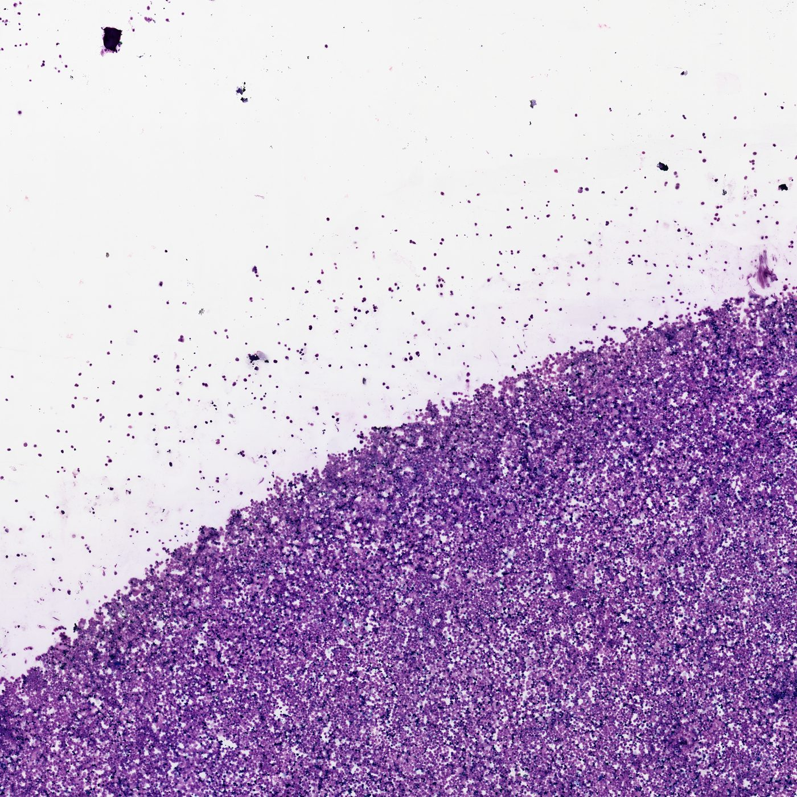
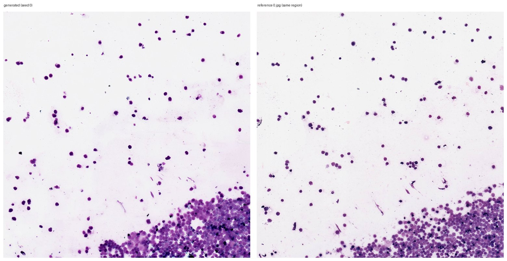
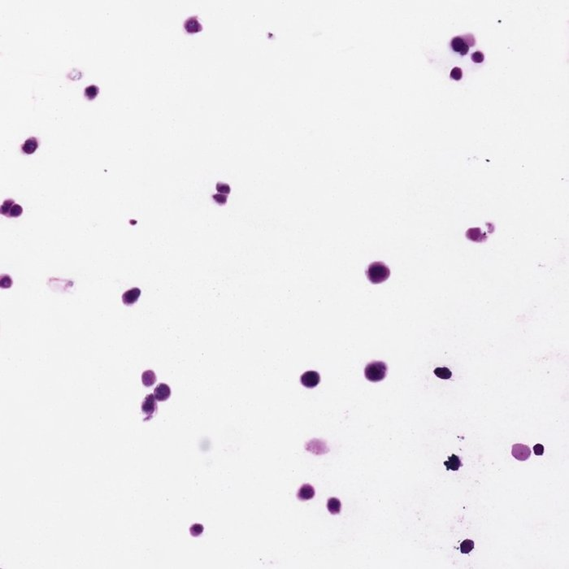

REPRODUCTION RECORD / INFERENCE ONLY
推理跑通了，
训练没碰。
用作者发布的 BigCell-2048 权重与官方 generate_from_grid.py，从作者提供的 UNI-2 特征网格生成真图：2048² 单图 32.7 秒、8192² 全速率 28.7 分钟、8192² 自适应调度 8.6 分钟（快 3.33×）。两次独立运行的 PNG 逐字节相同。论文的 FID/指标没有复现，本页也不声称复现。
跑到哪一步
作者公开的不是空仓库：bigcell/（SiT 生成器 + 滑窗采样 + VAE 封装）、cgm/（文本条件生成）、训练配置与推理脚本都在。但训练集是 15,966,332 个 2048² 图块 / 120,703 张 WSI，从头训练不在可复核范围内，本页只走推理。
| 部分 | 本页 | 说明 |
|---|---|---|
| 2048² 单图生成 | 已跑通 | 1 个窗口、20 步、CFG 2.0，官方默认参数 |
| 8192² 滑窗拼接 | 已跑通 | 49 个窗口，全速率与自适应两种调度 |
| 自适应窗口调度 | 已验证 | --top-r 0.25，实测 3.33× 加速 |
| 文本 → 8K（CGM） | 未跑 | 需 TITAN 文本编码器与 1.3 GB CGM 权重 |
| 32768² 生成 | 未跑 | 961 窗口，全速率约 3.5 小时 |
| 训练与论文指标 | 未做 | 仓库里也没有论文级指标评测脚本 |
环境与两个真实阻塞
阻塞一：服务器连不上 Hugging Face。gpu04 的 DNS 解析得到 IPv6/外网都不通，强制 IPv4 也超时。解法是在 Mac 上下载全部资产再 scp 上去，服务器端用 HF_HUB_OFFLINE=1 走本地路径。没有把 token 复制到服务器。
阻塞二：官方 requirements 装出的 torch 是 cu130，而机器驱动只到 CUDA 12.4。表现为 torch.cuda.is_available() == False。降到 torch==2.6.0（+cu124）后正常。环境装在独立的 /data1/kxchen/envs/bigcell_py311，没有改动机器上任何现有环境。
顺带一条经验：BigCell 的 3.38 GB 权重用 hf download 默认 Xet 后端在 Mac 上卡住（1800 秒只下到 134 MB），换 HF_HUB_DISABLE_XET=1 用普通 HTTP 断点续传，157 秒下完且哈希与官方 LFS 一致。
资产与校验
只取推理必需的三样：生成器、FLUX.2 的 VAE（作者不随代码分发）、一个官方样例。完整 FLUX.2 与 UNI-2、TITAN 都没有下载。
| 文件 | 大小 | SHA-256 前缀 | 来源版本 |
|---|---|---|---|
bigcell-2048/transformer/diffusion_pytorch_model.safetensors | 3.38 GB | 17a3b716… | BigCell @ c08a684 |
vae/diffusion_pytorch_model.safetensors | 336 MB | d64f3a68… | FLUX.2-dev @ 26afe3a |
sample-2048/0_uni.npy | 197 KB | 6370384f… | sample-data @ 7ccb55f |
sample-8192/0_uni.npy | 3.15 MB | d8ee8223… | sample-data @ 7ccb55f |
两个网格都是 float16、形状 (8,8,1536) 与 (32,32,1536)：一个 UNI-2 token 对应 256 px，所以 8×8 出 2048²、32×32 出 8192²。VAE 与生成器的哈希在传输后于服务器端重新计算，与官方 LFS 一致才继续。
三次推理实测
| 运行 | 网格 | 窗口数 | 模型前向 | 去噪 | 总耗时 |
|---|---|---|---|---|---|
| 2048 单图 | 8×8 | 1 | 40 | 29.4 s | 32.7 s |
| 8192 全速率（top-r 1.0） | 32×32 | 49 | 1960 | 1618.1 s | 1721.9 s（28.7 min） |
| 8192 自适应（top-r 0.25） | 32×32 | 49（每步取 13） | 592 | 424.3 s | 516.8 s（8.6 min） |
可复现性：2048 跑两次，PNG 的 SHA-256 完全相同（3ecb80cb…），种子固定即结果固定。
显存不随画布涨：8K 运行时实测占用约 11.4 GB / 24 GB，与 2048 同一量级——因为窗口始终是 256 个 latent（2048 px），画布只是叠加多个窗口的速度场。这就是论文“显存不跟图变大”的实际表现。
速度读法：单窗口一步约 1.4 s；8K 一步 49 窗口约 83 s，即单个窗口前向约 1.7 s，与单图量级一致，拼接本身几乎没有额外开销。
画质与接缝


0.jpg。两者细胞分布、右下细胞团位置、纤维走向一致；生成的核更规整、背景更干净——这是生成结果与真实切片的差距，不是流程故障。| 指标 | 2048 单图 | 8192（全速率） | 怎么读 |
|---|---|---|---|
| 16 px 块均值相关系数 | 0.725 | 0.964 | 大尺度组织布局吻合；8K 上更高，因为布局信息更充分 |
| 与参考图 PSNR | 16.92 dB | 14.57 dB | 逐像素级，参考图是相邻切片且被降采样，绝对值没有意义 |
| 接缝列梯度 / 非接缝列 | — | 1.364（竖）/ 1.316（横） | 存在轻微统计抬升，但同一统计在真值图上是 0.988，抬升幅度很小 |

自适应调度验证
论文 §3.3 说自适应窗口调度能把 32K 生成加速 3× 以上：第一步算全部窗口，之后只重算 CFG 幅度最大的前 r 比例窗口，其余复用缓存的上一帧速度。本页在 8K 上验证：--top-r 0.25 使前向次数从 1960 降到 592（3.31×），墙钟从 1721.9 s 降到 516.8 s（3.33×）。
画质代价：与全速率输出逐像素比较 PSNR 29.66 dB，接缝比值 1.412（全速率 1.364），肉眼看不出差别。作者的“超过 3× 加速”在本机成立。
已知局限
- 只跑推理：没有任何训练，也没有复现论文的 FID 等指标；仓库不含论文级评测脚本，本页不拿推理输出冒充指标。
- 参考图不是同一切片：样例
<size>/0.jpg是 2048 px 降采样版，且来自相邻切片，所以 PSNR 只能当“布局一致性”的旁证。 - 单种子、单区域：只有一个 CPTAC AML 区域的 8×8 与 32×32 网格，没有跨器官、跨染色统计。
- GPU 与他人共用：卡 0 上有别的进程（利用率 29–100%），耗时会随负载浮动，不能当性能基准。
- 32K 未验证：显存估算可行（画布叠加约 8.6 GB 额外），但没实跑，不能提前宣称通过。
命令与文件位置
| 路径 | 内容 |
|---|---|
/data1/kxchen/baseline/BigCell/upstream | 官方代码，detached HEAD 固定 8c104b0f |
…/bigcell-2048、…/vae | 生成器与 FLUX.2 VAE |
…/sample-2048、…/sample-8192 | 官方样例网格与参考图 |
…/outputs | 三张生成图（PNG，2048² 与 8192²） |
…/assets.json | 版本、命令、哈希、耗时、接缝统计的机器可读记录 |
/data1/kxchen/envs/bigcell_py311 | 独立推理环境（py3.11 / torch 2.6.0+cu124） |
本机只保留 assets.json、样例网格与三张 PNG；3.5 GB 权重在传输校验通过后已从 Mac 删除，重跑直接从服务器读。
来源
- BigCell 论文（arXiv:2610.14261）：§3.3 自适应调度、附录 C 滑窗多扩散。
- 官方仓库固定版本 8c104b0f：
scripts/generate_from_grid.py、bigcell/sampling.py、bigcell/vae.py。 - 权重与官方样例数据。
- 本页数字全部来自服务器端
assets.json与运行日志，未手工改写；图片由对应 PNG 直接缩放生成。